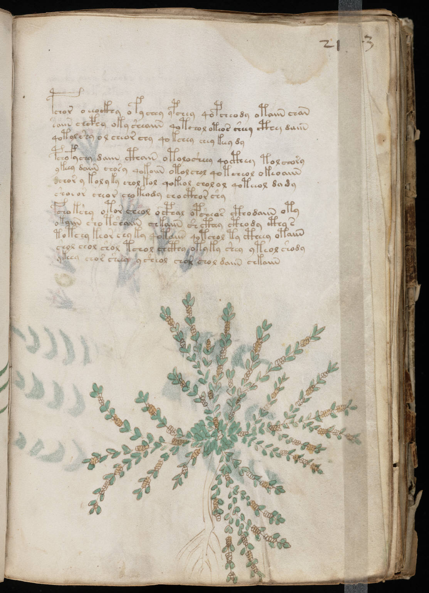

f21r
1pchor oeeockhy ofychey ypchey qopcheody otaiin chan2saiin chcphy oky sheaiin qotchol oteos sheey cthy daiin3qotol shy ol cheor chy qokchey chey keey dy4pchofychy daiin cthain otolosheey qocthey tolchory5ykeey daiin chosy qokoiin otol chol qotcheol okeoaiin6dchor y kolyky chol kol qokeol cholol qoteeol dady7shoeor cheor chokeody cho cthor shy8fchokshy otor cheol ocphal opcheas cthodaiin oty9okaiin sho tshaiin chkaiin shcthey cthody cthy s10totchy keor chy ky qotaiin qotchol ty ctheey otaiin11shol chol shol tchol chcthy otyky shey yteol shody12ykeea chor sheey ysheol chor chol daiin chkaiin
